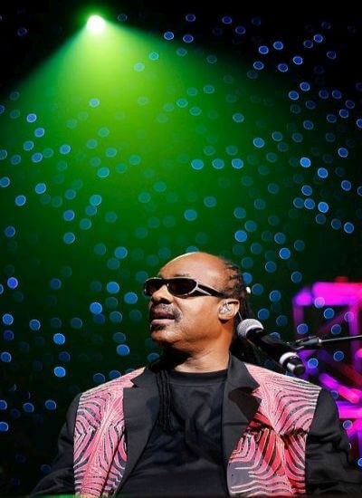

De nuevo nos encontramos con un año finalizado más sin la recompensa de sentir en nuestras almas alguno de los proyectos que Stevie Wonder nos tiene prometidos.
Los que amamos la música de Stevie Wonder somos pacientes, a la vez que confiados ciegamente en sus cualidades como músico y transmisor de emociones. Sabemos que es una leyenda, sabemos que aún nos quedan muchas sorpresas por disfrutar, ya que su música es una biblia sagrada que nos guía sin distinción de color o género. Hombre polifacético, lleno de sensibilidad y muy exigente consigo mismo, tratando de alcanzar el
perfeccionismo absoluto. Quizá sea esto lo que lo mantiene retrasado en la publicación de nuevos trabajos.
No obstante revisando lo sucedido este 2011, vemos que la actividad de Stevie no ha parado. Recogiendo premios y honores a su contribución por la música, entre los que destaca su ingreso en el
Salón de la Fama de las Leyendas del Teatro Apollo de Nueva York. Colaboraciones con otros artistas/amigos en sus álbumes u homenajes. De esta forma nos encontramos con el 60 aniversario de
Sting, el 50 aniversario del Presidente
Obama, el de
Tony Bennett -¿para cuando ese álbum de duetos?- , el homenaje a
Oprah Winfrey por la despedida de su show, al de
Chaka Khan, o a los
grandes artistas del viejo soul.
Más colaboraciones, esta vez en los álbumes de Pixie Lott, Maysa o Drake. Su presencia y pesar en momentos más tristes, como la despedida de la fundadora del museo de la Motown -y ejecutiva de la compañía en sus comienzos- Esther Gordy Edwards o la de Yvonne Whitmore, su profesora en los años 60 en la escuela para ciegos. Y cómo no, de nuevo nos encontramos al Stevie Wonder brillante con sus
conciertos en vivo, donde la magia y encanto siguen cautivando allá por donde actúa.